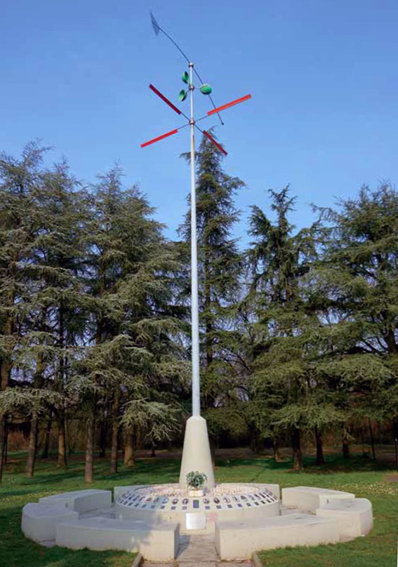

TAPPA 14: Parco della Resistenza, monumento Bruno Munari
14.1 - Monumento Bruno Munari

Il monumento alla Resistenza, collocato nel verde del Parco della Resistenza, è stato realizzato dall’artista Bruno Munari nel 1995, e ha sostituito la lapide ricordo incastonata in quella che era stata la porta delle Regie Poste e nel dopoguerra sede della Biblioteca comunale, in piazzetta Feltrino Boiardo.
Il titolo che Munari ha voluto conferire all’opera è: UNITI NELLA DIVERSITÀ.
La freccia-timone alla sommità dell’asta indica l’unica rotta, quella della libertà e della democrazia. I due anemometri, uno rosso e uno verde, che ruotano nelle differenti direzioni, simboleggiano la molteplicità delle componenti culturali, politiche e storiche della Resistenza, la molteplicità di contributi provenienti da uomini e donne con appartenenze diverse ma che seppero lottare insieme per il fine comune della liberazione dal nazifascismo.
Alla base del monumento sono collocate le fotografie di partigiani scandianesi caduti, di Internati Militari Italiani deportati (I.M.I.) morti nei campi di lavoro forzati in Germania, perché dopo l’8 settembre 1943 si rifiutarono di continuare a combattere a fianco dei nazifascisti e della Repubblica di Salò; di scandianesi combattenti e di partigiani caduti all’estero, di vittime della violenza fascista nei primi anni '20 e di vittime civili della guerra morte nei bombardamenti su Scandiano.
La collocazione delle fotografie su una base circolare, senza gerarchie in verticale, sta anche a significare l'importanza del contributo di ciascuno di loro alla Liberazione, la pari dignità e il pari valore di ciascuno di coloro che furono travolti dal fascismo e dalla guerra e scelsero di opporsi alla barbarie nazifascista.
Nel monumento non compaiono fotografie delle tante donne scandianesi che parteciparono alla Resistenza come staffette e partigiane, perché fortunatamente nessuna di loro perse la vita durante la lotta di Liberazione, nessuna morì in combattimento, fu assassinata o deportata, come invece accadde in altre zone della provincia reggiana e d'Italia.
Lungo il ciclopedonale del Tresinaro, a Fellegara, sui gradoni del piccolo anfiteatro sono scritti i nomi delle 44 donne scandianesi Partigiane e Patriote. Il progetto è stato realizzato da ragazze e ragazzi del MADE di Scandiano, insieme al Comune e all’ANPI.
Il titolo che Munari ha voluto conferire all’opera è: UNITI NELLA DIVERSITÀ.
La freccia-timone alla sommità dell’asta indica l’unica rotta, quella della libertà e della democrazia. I due anemometri, uno rosso e uno verde, che ruotano nelle differenti direzioni, simboleggiano la molteplicità delle componenti culturali, politiche e storiche della Resistenza, la molteplicità di contributi provenienti da uomini e donne con appartenenze diverse ma che seppero lottare insieme per il fine comune della liberazione dal nazifascismo.
Alla base del monumento sono collocate le fotografie di partigiani scandianesi caduti, di Internati Militari Italiani deportati (I.M.I.) morti nei campi di lavoro forzati in Germania, perché dopo l’8 settembre 1943 si rifiutarono di continuare a combattere a fianco dei nazifascisti e della Repubblica di Salò; di scandianesi combattenti e di partigiani caduti all’estero, di vittime della violenza fascista nei primi anni '20 e di vittime civili della guerra morte nei bombardamenti su Scandiano.
La collocazione delle fotografie su una base circolare, senza gerarchie in verticale, sta anche a significare l'importanza del contributo di ciascuno di loro alla Liberazione, la pari dignità e il pari valore di ciascuno di coloro che furono travolti dal fascismo e dalla guerra e scelsero di opporsi alla barbarie nazifascista.
Nel monumento non compaiono fotografie delle tante donne scandianesi che parteciparono alla Resistenza come staffette e partigiane, perché fortunatamente nessuna di loro perse la vita durante la lotta di Liberazione, nessuna morì in combattimento, fu assassinata o deportata, come invece accadde in altre zone della provincia reggiana e d'Italia.
Lungo il ciclopedonale del Tresinaro, a Fellegara, sui gradoni del piccolo anfiteatro sono scritti i nomi delle 44 donne scandianesi Partigiane e Patriote. Il progetto è stato realizzato da ragazze e ragazzi del MADE di Scandiano, insieme al Comune e all’ANPI.